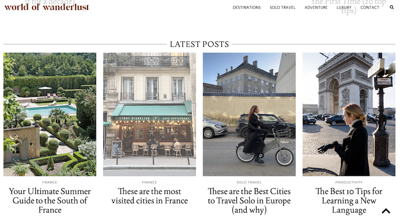
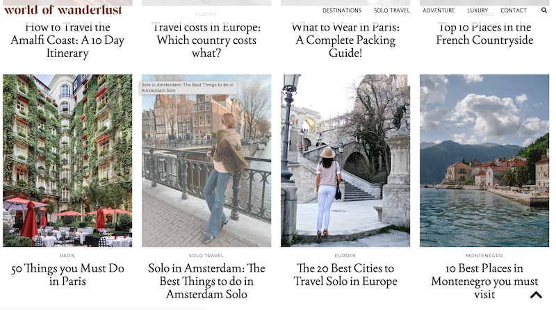
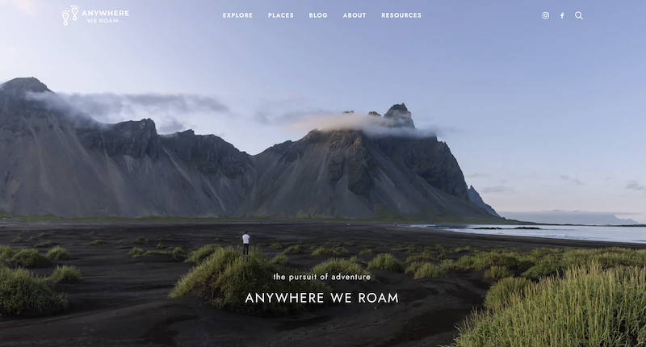
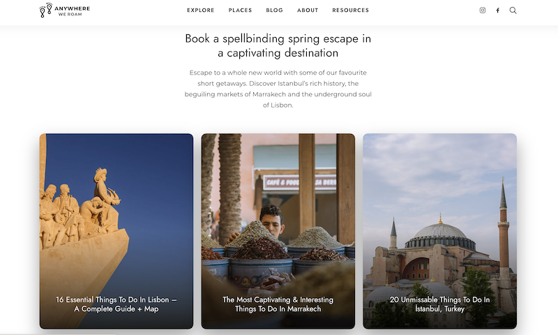
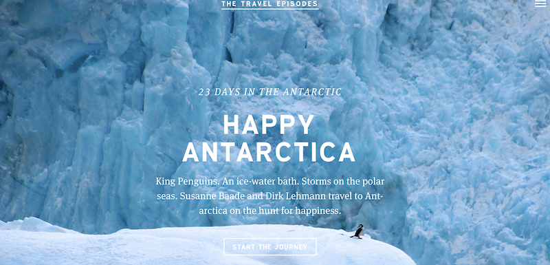
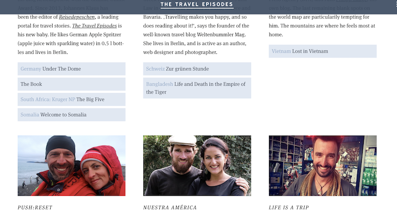

Comparative Analysis for Interactive Narrative Project
July 18th, 2023
There are a lot of amazing travel blog websites out there that showcase uniqueness and originality. I picked three of my favorite ones for analysis for my Interactive Narrative project. These travel blog websites utilize various design elements and considerations for storytelling, and I learned a lot from studying them.
 World of Wanderlust (designed by Brooke Saward) is a website that publishes informative stories and articles to help guide audiences to plan and envision their travels. This website’s content includes travel blogs, costs, places to eat, places to stay, travel tips, and so on. The contents are categorized into different categories for the user’s convenience. The front page of the website utilizes a clear grid structure for information layout. Posts and articles are exhibited as cards that are all the same size and are neatly organized on the page. The navigation bar is straightforward and the site is easy to navigate. One thing that I think could be better is probably to add some other design variations on the front page. The cards look amazing but I think maybe adding some other design elements would be more visually appealing. This website inspired me to really think about what grid structure I should use to better present the information.
 Anywhere we roam (designed by Mark and Paul) has a clean and minimal style front page. The website includes a full-size image on every page to not only emphasize the travel theme but the photos also serve as a heading that introduces the audience to the main content of the page. The website consists of various design elements and breaks the grid accordingly to better organize the information. I noticed that some of the words are highlighted on the front page, which I think it’s really interesting, and help visually bring out the information to the audience. Text is mostly center aligned, and sometimes there are orphans in the text which I think could be fixed to present the content better.
 The travel episodes (designed by Johannes Klaus, Berlin, and Malik Verlag, Munich) presents blogs and articles from various travelers around the world. The home page is divided into several different episodes that showcase stories at different destinations. By using full-screen images, they help create an immersive viewing experience for the audience. The navigation menu is condensed into a hamburger icon, which I think helps reduce cognitive load for users. However, some of the buttons have blue text on a blue background, which makes them a bit hard to read. Other than that, I enjoy exploring the website and the hover state of the buttons is really inspiring.